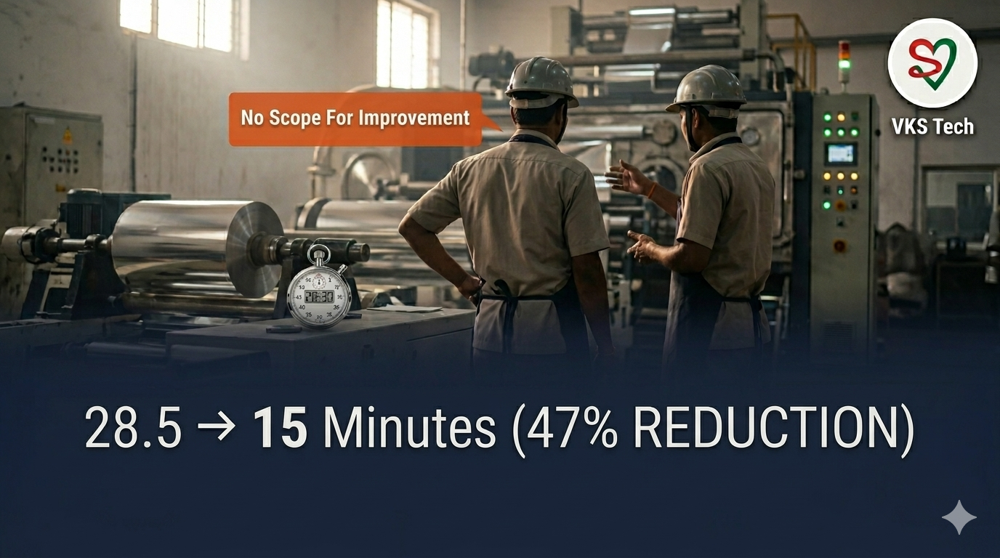
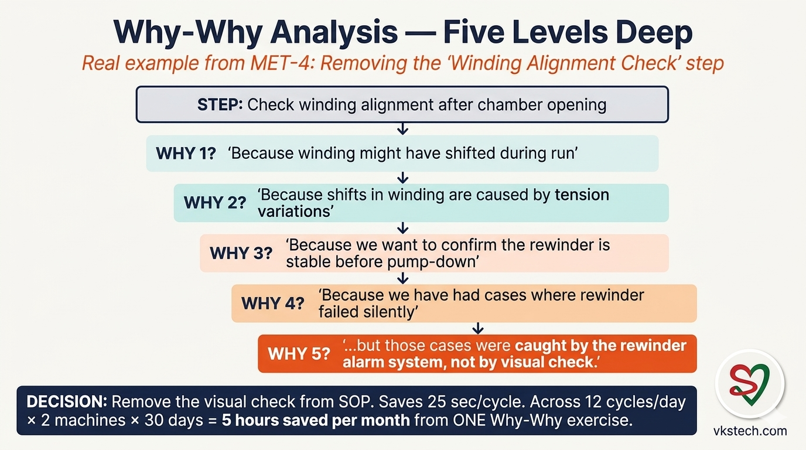
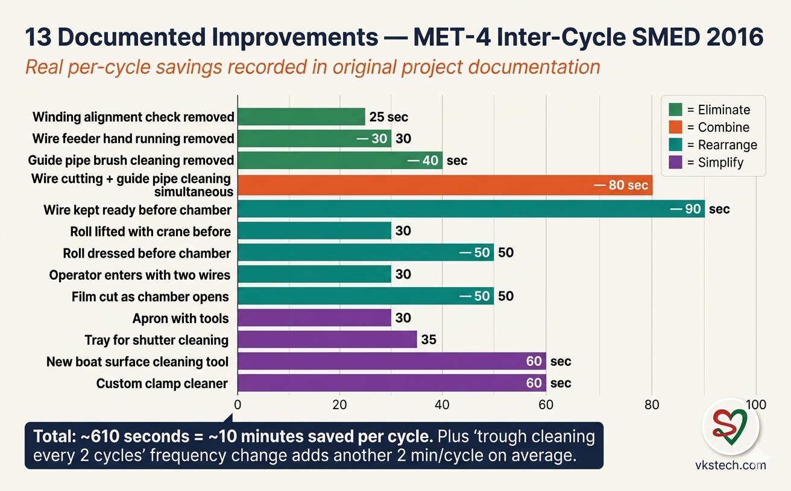
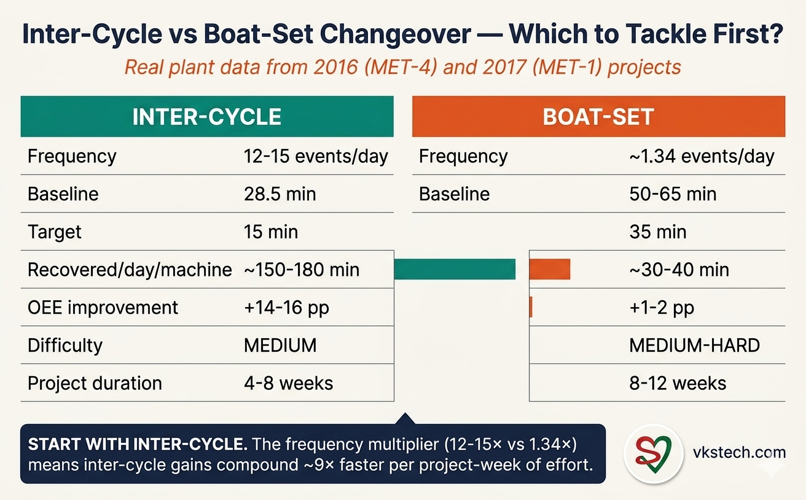
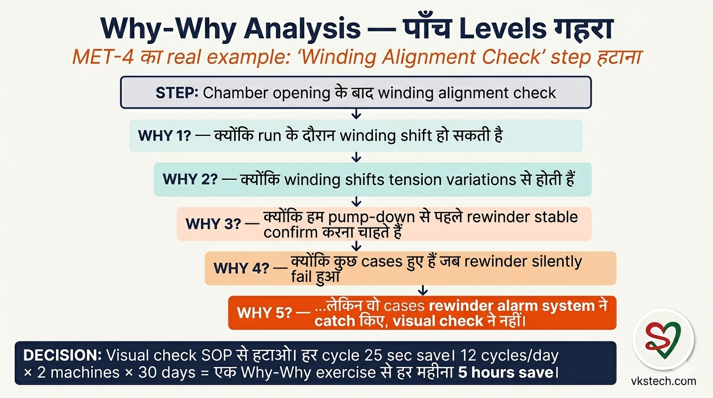
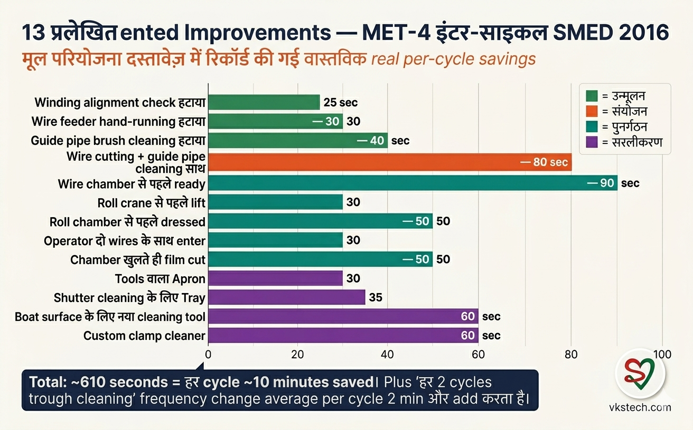
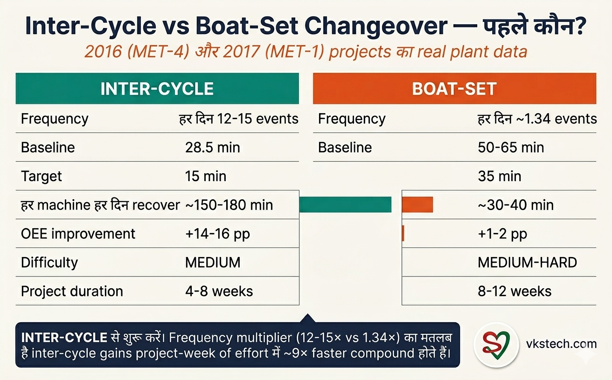

🚀 When Operators Said "No Scope for Improvement" — A 2016 Roll Changeover SMED Case Study
📖 18-min read | Real Plant Case Study | Published April 2026 | Bookmark for reference
In March 2016, a team at our MET-4 metalliser plant told their leadership in clear words: "There is no scope for further improvement in roll changeover. We have already optimised everything that can be optimised." Two weeks later, the same team had a project plan that cut roll changeover from 28.5 minutes to a target of 15 minutes — about a 47 percent reduction. Six months later, that target was real shop-floor performance.
I reviewed this project at our plant in 2016 as part of internal peer review. I sat through the data presentation, walked the shop floor, watched changeover videos, and read the activity logs. The project was real. The numbers were real. And the most uncomfortable truth in this whole story is that the team's initial belief was sincere — they really did think they had no further improvement scope. They were wrong, and the methodology that proved them wrong is the same one any plant can use today.
This blog tells you exactly how a 9-person team broke their own "no scope" mindset using video, Why-Why analysis, ECRS, and a deeply uncomfortable willingness to question assumptions they had held for years. The 13 specific improvements are documented with the exact seconds saved per activity. The data and progression are taken from the original 2016 project records, which I had access to as a peer reviewer.
If you run a metalliser plant in India today and your inter-cycle (jumbo-to-jumbo) roll changeover takes more than 20 minutes — and your team tells you it cannot get faster — this is the playbook to break that belief.
I am writing this in April 2026, ten years after the original MET-4 project. In the decade since, I have reviewed similar SMED projects at multiple plants across India, and the methodology has held up exactly the same way every time. The technical environment has not meaningfully changed: same boats, same vacuum systems, same operator pressures, same SOP drift over years of "no scope" thinking. The 2016 data is real plant history. The lessons translate directly to any metalliser plant operating in 2026.
- Starting average: 28.5 min (data from 100 roll changeovers, 15-31 March 2016)
- Range observed: 15 min minimum, 54 min maximum — huge variability
- Documented improvements: 13 specific changes saving ~610 seconds combined (~10 min)
- Target set: 12 min setup + 3 min boat & wire = 15 min total (the 3-min component covers occasional boat or wire replacement during inter-cycle changeover)
- Cycles per day: 12-15 inter-cycle changeovers per machine — the impact multiplier
- Method: Why-Why analysis + ECRS + SOP review + operator-led innovation
- Capex required: Near-zero (only small custom tools)
📍 The Problem in March 2016
The team had been running roll changeover the same way for three years. Every shift, every operator, every machine — same sequence, same tools, same tempo. The team's belief that there was "no scope for improvement" came from the same place most such beliefs come from: they had not actually measured their own work in detail. They had been running the SOP as written, and the SOP felt complete to them.
What changed was a leadership directive in early March 2016 to take 100 roll changeovers and time every activity. Not just the total time — every individual step, every pickup of a tool, every walk across the chamber, every clamp tightening. The team initially resisted — their sentiment, in essence, was that there was no point measuring what they had already optimised. The mentor's response, paraphrased from peer-review notes, was direct: if measurement proves the team right, the project ends. But measure first.
The data came back over the next three weeks (15 March to 31 March 2016). Maximum changeover: 54 minutes. Minimum: 15 minutes. Average: 28.5 minutes. Two things were striking. First, the minimum — 15 minutes — was already happening. Some shifts were doing it in 15 minutes. So 15 was clearly possible. Second, the variation between minimum and maximum was 39 minutes. That much variation cannot be explained by "different machines" or "different operators" alone. There was systemic waste hiding in plain sight.
🚫 The "No Scope" Mindset — Where It Comes From
Every plant I have visited has at least one team that says some version of "we have already optimised this." It is one of the most common phrases in Indian manufacturing, and it is usually said with complete sincerity. Understanding where the mindset comes from is the first step to breaking it.
The "no scope" belief comes from three places. First, familiarity bias: when you have done the same task 5,000 times, every step feels essential because you have always done it. Second, SOP rigidity: if a step is in the written procedure, operators assume it is there for a reason — even when nobody can explain the reason. Third, improvement fatigue: most Indian plants have already gone through several "kaizen" cycles, and each round leaves the team feeling the work is increasingly squeezed. After three rounds of improvement, every additional round feels harder than the last.
The 2016 MET-4 team had all three of these in full strength. They had been running for three years. The SOP had been refined twice. They had survived two prior improvement initiatives. Their "no scope" belief was not lazy — it was the natural result of being in steady state for too long without fresh measurement.
What broke the mindset was not arguing with them. It was data. Specifically, the discovery that 15-minute changeovers were already happening on some shifts. If 15 was possible, then the average being 28.5 was the problem.
🔍 Why-Why Analysis — Five Levels Deep

The first methodology the team applied was Why-Why analysis (sometimes called the "5-Why" method). For every step in the existing roll changeover SOP, the team asked "why is this step necessary?" five times. The fifth answer is usually where the truth lives.
One example from the project notes (paraphrased from peer-review records):
- Step: "Check winding alignment after chamber opening."
- Why 1: "Because winding might have shifted during run."
- Why 2: "Because shifts in winding are caused by tension variations."
- Why 3: "Because we want to confirm the rewinder is stable before pump-down."
- Why 4: "Because we have had cases where rewinder failed silently."
- Why 5: "...but those cases were caught by the rewinder alarm system, not by visual check."
The visual check after chamber opening was redundant. The alarm system already caught the failure mode. Removing the step saved 25 seconds per cycle. Multiplied across 12 cycles per day per machine, that single change recovered 5 minutes per day per machine. Across the plant's 2 metallisers and 30 days per month, that one removal recovered 5 hours per month — from a single Why-Why exercise on a single SOP step.
The team applied Why-Why to 47 SOP steps over two weeks. About 15 percent of the steps either disappeared entirely or were significantly modified.
🛠️ ECRS Discipline — Same Method, Different Application
The second methodology was ECRS — Eliminate, Combine, Rearrange, Simplify. This is the same framework Toyota developed in the 1960s and is used at every serious lean manufacturing plant globally. The MET-4 team applied it activity by activity. For readers familiar with the boat changeover case study, this is the same discipline applied to a different changeover type:
- E — Eliminate: Activities that add no value can be removed entirely.
- C — Combine: Two activities can be merged, removing the transition time between them.
- R — Rearrange: An activity can be moved to a different point in the sequence — especially moved before the chamber opens (offline prep).
- S — Simplify: If an activity must remain, it can be made faster with a better tool, position, or method.
Why-Why and ECRS work as a pair. Why-Why questions the logic of each step. ECRS finds the optimisation. Together they generated the 13 documented improvements that follow.
📋 The 13 Documented Improvements — Full Table

Here are all 13 improvements the team implemented, with the exact seconds saved per cycle as recorded in the project documentation. Some were operator-led ideas, others came from team analysis sessions:
| # | Improvement | Type | Savings |
|---|---|---|---|
| 1 | Winding alignment check after chamber opening removed from SOP | Eliminate | 25 sec |
| 2 | Wire kept ready before chamber opening (not fetched after) | Rearrange | 90 sec |
| 3 | Roll lifted with crane before chamber opening | Rearrange | 30 sec |
| 4 | Roll dressed and double joint tape pasted before chamber opening | Rearrange | 50 sec |
| 5 | Apron with graphite tape and tools provided to operators | Simplify | ~30 sec |
| 6 | Operator enters chamber with two wires (not without) | Rearrange | 30 sec |
| 7 | Guide pipe mouth cleaning + wire cutting simultaneous (not sequential) | Combine | 80 sec |
| 8 | Rewinder/unwinder film cut as chamber opens (not after) | Rearrange | 50 sec |
| 9 | Tray used for shutter cleaning (replaces air cleaning) | Simplify | 35 sec |
| 10 | New tool for boat surface and clamp cleaning (replaces scraper) | Simplify | 60 sec |
| 11 | Wire feeder running by hand removed from SOP | Eliminate | 30 sec |
| 12 | Guide pipe wire brush cleaning step removed | Eliminate | 40 sec |
| 13 | Custom clamp cleaner: 3 clamps/min vs 30 sec/clamp manual | Simplify | ~60 sec |
| Total documented per-cycle savings | ~610 sec (~10 min) | ||
Plus a 14th process change that did not save time per cycle but saved time per multi-cycle period: trough cleaning was reduced from every cycle to every 2 cycles, saving 4 minutes across each pair of cycles. That averages out to another 2 minutes saved per cycle when amortised.
Combined per-cycle saving: roughly 12 minutes. Starting from 28.5 minutes, the math works out to a 16-17 minute average. The team's actual result settled at the 15-minute target — closing that final 1-2 minute gap came not from new improvements but from operator-to-operator knowledge transfer, training, and the operator competition system (described later in this blog). The technical changes opened the door to 16-17 minutes; the cultural changes drove the average all the way down to 15.
Five of these improvements deserve detailed narration because they reveal the way the team thought about the work. Let me walk through them.
💡 Detail #1 — The "Two Wires Entry" (Item #6)
Before the project, when the chamber opened, the operator would walk in empty-handed to assess what was needed, then walk out, fetch wires, and walk back in. The walk takes about 30 seconds round trip. Multiplied across 12 cycles per day, that is 6 minutes per day per machine of pure walking time.
The fix was almost embarrassingly simple: have the operator carry two wires when they enter. Not one wire. Two. Because the wire requirement was almost always two — the team had observed this from the videos but never coded it as standard practice.
This is the kind of insight that comes only from watching video, not from reading SOPs. When you watch yourself work, you notice the round trips that you would never notice while doing the work. The team described the experience of seeing the operator walk in and out with empty hands as deeply uncomfortable — they had been doing it that way for years without questioning the pattern.
This insight applies to almost every plant. Walk into your own metalliser today during a roll changeover. Count the round trips. Each round trip is potential SMED savings.
💡 Detail #2 — The Apron Innovation (Item #5)
The team noticed that operators were constantly walking back to the tool stand for graphite tape, light tools, and small consumables during the changeover. The solution they came up with was operator-led: aprons with deep pockets, customised for the specific items operators reached for most.
The apron carried: graphite tape roll, small scissors, marker pen, screwdriver, plier, and a few standard nuts and bolts. The operator wore the apron throughout the changeover. Every "fetch" trip to the tool stand was eliminated for these items. The savings were not large per individual fetch — maybe 5 to 10 seconds — but they were so frequent that they accumulated to about 30 seconds per cycle.
What made this innovation powerful was that operators designed it themselves. They knew which tools they reached for most often. The supervisor's role was just to fund the apron purchase. This is a recurring pattern in successful SMED projects — operators have insights that supervisors do not, but only if asked the right way.
💡 Detail #3 — The Combined Wire Cutting + Guide Pipe Cleaning (Item #7)
Before the project, two activities ran sequentially: hand twisting of wire (about 80 seconds), and then guide pipe mouth cleaning by pliers (about 60 seconds). Two activities. Two distinct hand motions. Total around 140 seconds.
The team noticed during video review that the same plier was being used for both activities. The hand was the same. The position was almost the same. They were just doing them sequentially because the SOP listed them as separate steps. Combining them into a single fluid motion — wire cutting and guide pipe cleaning happening together with the same plier — saved 80 seconds.
This is the C in ECRS in its purest form. Two activities are combined, the transition between them is removed, and the motion becomes more economical. The operator does not need any new training — they were already doing both motions. They just need to be told they can do them together.
💡 Detail #4 — The Trough Cleaning Frequency Change (Bonus item #14)
The trough — the oil cooling channel below the source — was being cleaned every roll changeover cycle. The cleaning takes about 4 minutes. The team's Why-Why investigation revealed that the trough did not actually need cleaning every cycle. Every two cycles was sufficient based on the actual fouling rate observed in the trough.
Changing the frequency from "every cycle" to "every 2 cycles" saved 4 minutes across each pair of cycles. That is 2 minutes saved per cycle on average. This was the single largest documented saving in the project — bigger than any individual ECRS improvement.
Frequency changes are often the highest-leverage SMED interventions because they compound across many cycles. The lesson: not every "every cycle" task actually needs to happen every cycle. Audit your "every cycle" assumptions with data, not habit.
💡 Detail #5 — The New Custom Cleaning Tools (Items #10 and #13)
Two of the 13 improvements involved custom-made cleaning tools that the team designed in collaboration with the plant fabrication shop. Both tools dramatically reduced the time per individual cleaning operation:
- Boat surface and clamp cleaning tool (Item #10): replaced the standard scraper with a purpose-shaped tool that matched the curvature of the boat surface. Saved 60 seconds per cycle.
- Custom clamp face cleaner (Item #13): replaced manual emery paper cleaning (30 seconds per clamp) with a powered tool that cleaned 3 clamps per minute (20 seconds per clamp). Across 4-6 clamps per cycle, this saved roughly 40-60 seconds.
Custom tools are the only "capex" the project required, and even then it was minimal — under ₹10,000 total for both tools combined. The fabrication was done in-house. This is what "near-zero capex" looks like in real plant terms: small, focused investments in tooling, justified by clear time savings.
The lesson here is to question your tools, not just your sequence. Most lean projects focus on sequence and choreography. The MET-4 team also asked: "Are we using the right tool for this task?" The answer was no for two specific tasks, and the tool changes saved 100 seconds per cycle.
📊 The Operator Competition System
The 13 improvements were the methodology. The cultural change was something else: posting daily average changeover time on a board, organised by operator name.
The mentor and team leader instituted this in the second month of the project. Every shift, every operator's average changeover time for the day was written on a whiteboard near the metalliser. Names. Numbers. Visible to everyone.
The result was unexpected. Within two weeks, operators were actively comparing their performance to peers — asking each other how the faster shifts were doing it, requesting demonstrations, and trading techniques. Operators started teaching each other their tricks. The supervisor's role became less about enforcement and more about facilitation. The number on the board became a source of operator pride, not management pressure.
This is a critical learning that translates to every plant: visible daily measurement creates ownership. Without measurement on the board, any SMED gain regresses within months as operators slip back to old habits. With visible daily measurement, the gain compounds because operators internalise the goal.
📊 From 28.5 to 15 Minutes — The Math
The math at the plant level is significant. Before the project, the average was 28.5 minutes across 12 cycles per day per machine. After the project, the target was 15 minutes:
| Metric | Before (March 2016) | After Project | Difference |
|---|---|---|---|
| Average per cycle | 28.5 min | 15 min | -13.5 min |
| Setup time per machine per day (12 cycles) | 342 min | 180 min | -162 min |
| Setup time as % of 1,440-min day | 23.8% | 12.5% | -11.3 pp |
| Recovered run time per machine per day | — | — | +162 min (~2.7 hr) |
| Recovered run time per plant (2 machines) | — | — | +5.4 hr/day |
| Recovered run time per month (30 days) | — | — | ~162 hr/month |
The OEE improvement is significant — over 11 percentage points of OEE Availability recovered just from inter-cycle setup reduction. For most plants, this is the largest single OEE intervention available without capex.
💰 Realistic Economics — 3 Lenses
As with any SMED project, the savings depend on which lens you use:
Lens 1 — Raw production time recovered. About 162 minutes per machine per day, or 5.4 hours for a 2-machine plant. Mathematically uncontestable.
Lens 2 — Realistic extra jumbos delivered. Raw time does not become jumbos one-to-one. Next-stage limits (slitter, packaging, dispatch) typically capture 30-40 percent of raw potential. For an inter-cycle SMED specifically, the realistic delivery is 2-3 extra jumbos per day per plant. At ₹15,000-20,000 contribution margin per jumbo, that is ₹10-15 lakh additional monthly margin.
Lens 3 — OEE improvement. Inter-cycle SMED alone delivers +14-16 percentage points of OEE Availability. Combined with boat-set SMED (covered in our boat change blog), the total is +15-18 percentage points. This is typically the most management-friendly number — it shows up directly on plant scorecards.
For a downloadable Excel calculator that lets you plug in your own plant numbers, see the asset pack at the end of this blog.
🔄 How to Apply This in Your Plant
If your inter-cycle changeover is currently 20+ minutes, here is the four-week roadmap to start your own version of this project. The methodology is the same as the MET-4 team used in 2016 — and the same as our boat change project used in 2017.
Week 1 — Measure. Time 100 actual roll changeovers. Not 5. Not 10. One hundred. Use a stopwatch and a paper log. Capture: total time, longest activity, operator name. This is the data foundation for everything else. Do not skip to fixing things in Week 1 — pure measurement only.
Week 2 — Analyse. Pick 5-10 of the longest changeovers and pick 5-10 of the shortest. Watch video of all of them if you can. Why is the difference 30+ minutes between best and worst? Run Why-Why on every step that takes more than 30 seconds. Apply ECRS to every step that survives the Why-Why. Expect to find 10-15 candidates for elimination, combination, or rearrangement.
Week 3 — Implement the high-impact changes first. Specifically: any "Rearrange" change that moves an activity offline (before chamber opens) is your highest-ROI win. Move wire prep, roll prep, tool staging, and tape pre-cutting offline. Just these changes alone typically save 5-7 minutes per cycle.
Week 4 — Post the daily average. Whiteboard near the machine. Operator names. Daily averages. This is the cultural piece that makes the technical changes stick. Without visible measurement, gains regress within two months. With it, gains compound.
Months 2-3 — Custom tools and choreography refinement. Once the obvious savings are captured, start asking about specific tools for specific tasks. Are scrapers right for boat cleaning, or should you have a custom shape? Is emery paper right for clamp cleaning, or should you build a powered tool? These are smaller savings individually but they compound.
🎯 Inter-Cycle vs Boat-Set — Which Should You Tackle First?

This blog is specifically about inter-cycle changeover (every jumbo, ~12-15 events per day per machine). Our boat change blog covers boat-set changeover (full source replacement, ~1.34 events per day per machine). They are different events with different scopes. Here is the practical comparison:
| Dimension | Inter-Cycle (this blog) | Boat-Set (boat change blog) |
|---|---|---|
| Frequency per day per machine | 12-15 events | ~1.34 events |
| Typical baseline | 20-30 min | 50-65 min |
| Typical achievable target | 15 min | 35 min |
| Time recovered per day per machine | ~150-180 min | ~30-40 min |
| OEE improvement | +14-16 pp | +1-2 pp |
| Difficulty of implementation | Medium (smaller changes, many improvements) | Medium-Hard (larger changes, fewer improvements) |
| Typical project duration | 4-8 weeks | 8-12 weeks |
For most plants, the answer is clear: start with inter-cycle. The frequency multiplier (12-15× vs 1.34×) means inter-cycle gains compound much faster. Boat-set gains are still real and worth pursuing — but the impact per project-week of effort is roughly 9× higher for inter-cycle work.
For the cycle math underlying these numbers, see our 1,440-Minute Analysis blog. For the boat-set deep dive, see the Boat Change 2017 Case Study. This blog focuses on inter-cycle.
🔬 Common Objections — Honest Answers
"Our team also says there is no scope for improvement." Yours is not the first team to say that. Mine was not the first either. The MET-4 team in 2016 said it sincerely. The fix is not to argue. The fix is to measure 100 changeovers and let the data argue. If the variation between minimum and maximum is more than 5-7 minutes, you have a SMED project waiting. If it is less than 5 minutes, your team may genuinely be near the ceiling.
"We do not have time to time 100 changeovers." You have time. Each timing is 15-30 minutes of one person's attention. Across a month with 360-450 changeover events, you only need to time about 1 in 4. That is one timing per shift. The data foundation cannot be skipped — every shortcut here makes the project weaker.
"What if our SOP genuinely is well-designed?" Then the Why-Why analysis will confirm that. You will not find redundant steps and your improvements will be smaller. That is a valid outcome. But across the dozens of plants I have reviewed in 9+ years of flexible packaging work, I have never seen a single SOP that did not contain at least three redundant steps. SOPs accumulate steps. They rarely lose them. Why-Why is how you prune.
"How do we get operators to suggest improvements when they have been doing the same SOP for years?" The MET-4 apron innovation came from operators only after they were shown video of themselves working. Watching their own work in slow motion changed what they noticed. Try this: film one changeover, then sit with the operators and watch it together with the playback at 0.5× speed. They will start suggesting changes within 10 minutes.
"We tried SMED before and it did not stick." SMED that does not stick is SMED without daily measurement. The board with operator names is not optional — it is the cultural mechanism that makes the technical gains permanent. Without it, you will regress within two months. With it, the gain compounds.
📥 Download the VKS Tech Inter-Cycle SMED Asset Pack
A complete kit built from the 2016 MET-4 project methodology — everything you need to run your own inter-cycle SMED project this quarter:
- Action Card PDF (6 pages): ECRS framework, the 13 documented improvements, Why-Why method, 4-week implementation guide, blank measurement log, blank Why-Why worksheet, blank ECRS worksheet
- SMED Savings Calculator (Excel): Input your current changeover time, target time, cycles per day, machines, and contribution margin per jumbo. The calculator outputs daily/monthly time savings, extra jumbos potential, ₹ savings per month, and OEE improvement projection. Designed to be the single sheet you share with your CFO.
Print the Action Card pages, share the Excel with your finance team. The asset pack is your inter-cycle SMED project starter kit.
🚀 जब Operators ने कहा "और Improvement की कोई Scope नहीं है" — एक 2016 Roll Changeover SMED Case Study
📖 20-min read | Real Plant Case Study | April 2026 में published | Reference के लिए bookmark करें
March 2016 में, हमारे MET-4 metalliser plant की एक team ने अपने leadership से साफ़ शब्दों में कहा: "Roll changeover में और improvement की कोई scope नहीं है। जो optimise हो सकता था, वो हम पहले ही कर चुके हैं।" दो हफ्ते बाद, उसी team के पास एक project plan था जो roll changeover को 28.5 minutes से 15 minutes target तक काटता था — लगभग 47 percent reduction। छह महीने बाद, वो target real shop-floor performance बन चुका था।
मैंने 2016 में internal peer review के हिस्से के रूप में इस project को review किया। मैं data presentation में बैठा, shop floor walk किया, changeover videos देखे, और activity logs पढ़े। Project real था। Numbers real थे। और इस पूरी कहानी का सबसे uncomfortable सच ये है कि team का initial belief sincere था — उन्हें सच में लगता था कि और improvement scope नहीं है। वो ग़लत थे, और जिस methodology ने उन्हें ग़लत साबित किया, वो आज भी कोई plant use कर सकता है।
ये blog आपको बताता है exactly कैसे एक 9-person team ने अपनी "no scope" mindset को तोड़ा video, Why-Why analysis, ECRS, और साल-दर-साल पकड़ी हुई assumptions को question करने की deeply uncomfortable willingness के through। 13 specific improvements per-activity exact seconds saved के साथ documented हैं। Data और progression original 2016 project records से लिए हुए हैं, जिन तक मेरी access peer reviewer के रूप में थी।
अगर आप India में metalliser plant चला रहे हैं और आपका inter-cycle (jumbo-to-jumbo) roll changeover 20 minutes से ज़्यादा लेता है — और आपकी team कहती है ये और faster नहीं हो सकता — तो ये playbook उस belief को तोड़ने का है।
मैं ये April 2026 में लिख रहा हूँ, original MET-4 project के दस साल बाद। इस दशक में, मैंने India के कई plants पर similar SMED projects review किए हैं, और methodology हर बार exactly same तरीक़े से hold हुई है। Technical environment meaningfully नहीं बदला है: same boats, same vacuum systems, same operator pressures, साल-दर-साल "no scope" thinking से वही SOP drift। 2016 का data real plant history है। Lessons 2026 में operate कर रहे किसी भी metalliser plant पर directly translate होते हैं।
- Starting average: 28.5 min (100 roll changeovers का data, 15-31 March 2016)
- Range observed: 15 min minimum, 54 min maximum — बड़ी variability
- Documented improvements: 13 specific changes, ~610 seconds (~10 min) combined saving
- Target set: 12 min setup + 3 min boat & wire = 15 min total (3-min component occasional boat या wire replacement के लिए जो inter-cycle changeover के दौरान कभी-कभी ज़रूरी होता है)
- Cycles per day: हर machine 12-15 inter-cycle changeovers — impact multiplier
- Method: Why-Why analysis + ECRS + SOP review + operator-led innovation
- Capex required: लगभग zero (केवल छोटे custom tools)
📍 March 2016 की Problem
Team तीन साल से वही तरीक़े से roll changeover चला रही थी। हर shift, हर operator, हर machine — same sequence, same tools, same tempo। Team का ये belief कि "और improvement scope नहीं है" वहीं से आया जहाँ से ज़्यादातर ऐसे beliefs आते हैं: उन्होंने अपने काम को detail में measure नहीं किया था। वो SOP जैसा लिखा था वैसा चला रहे थे, और SOP उन्हें complete लगता था।
जो बदला वो था early March 2016 का leadership directive — 100 roll changeovers लेकर हर activity time करो। सिर्फ़ total time नहीं — हर individual step, हर tool pickup, हर chamber walk, हर clamp tightening। Team ने initial resistance दिखाया — उनकी sentiment essentially ये थी कि जो already optimised है उसे measure करने का कोई point नहीं। Mentor का जवाब, peer-review notes से paraphrased, direct था: अगर measurement team को सही prove कर दे, project वहीं रुक जाएगा। पर पहले measure तो करो।
Data अगले तीन हफ्तों में आया (15 March से 31 March 2016)। Maximum changeover: 54 minutes। Minimum: 15 minutes। Average: 28.5 minutes। दो चीज़ें striking थीं। पहली, minimum — 15 minutes — पहले से हो रहा था। कुछ shifts 15 minutes में कर रही थीं। मतलब 15 clearly possible था। दूसरी, minimum और maximum के बीच variation 39 minutes था। इतनी variation सिर्फ़ "अलग machines" या "अलग operators" से explain नहीं हो सकती। Plain sight में systemic waste छुपी थी।
🚫 "No Scope" Mindset — कहाँ से आती है
हर plant जो मैंने visit किया है, उसमें कम से कम एक team होती है जो कहती है "हमने ये already optimise कर लिया है।" ये Indian manufacturing के सबसे common phrases में से एक है, और लगभग हमेशा complete sincerity के साथ कहा जाता है। Mindset कहाँ से आती है समझना उसे तोड़ने का पहला कदम है।
"No scope" belief तीन जगहों से आती है। पहला, familiarity bias: जब आप वही task 5,000 बार कर चुके हो, हर step essential लगता है क्योंकि आपने हमेशा वही किया है। दूसरा, SOP rigidity: अगर एक step written procedure में है, operators मानते हैं वो किसी reason के लिए है — even अगर कोई reason explain नहीं कर सकता। तीसरा, improvement fatigue: ज़्यादातर Indian plants पहले से कई "kaizen" cycles कर चुके हैं, और हर round के बाद team को लगता है काम और squeeze हो गया है। तीन rounds के बाद, हर additional round पिछले से harder लगता है।
2016 की MET-4 team में तीनों full strength में थे। तीन साल से चल रहे थे। SOP दो बार refine हो चुका था। दो prior improvement initiatives से बच चुके थे। उनकी "no scope" belief lazy नहीं थी — fresh measurement के बिना steady state में बहुत देर रहने का natural result थी।
Mindset को तोड़ने वाली चीज़ argue करना नहीं था। Data था। Specifically, ये discovery कि कुछ shifts पहले से 15-minute changeovers कर रही थीं। अगर 15 possible था, तो 28.5 का average problem था।
🔍 Why-Why Analysis — पाँच Levels गहरा

पहली methodology जो team ने apply की वो थी Why-Why analysis (कभी-कभी "5-Why" method भी कहते हैं)। मौजूदा roll changeover SOP के हर step के लिए, team ने पाँच बार पूछा "ये step क्यों ज़रूरी है?" पाँचवाँ जवाब वहीं होता है जहाँ truth रहती है।
Project notes का एक example (peer-review records से paraphrased):
- Step: "Chamber opening के बाद winding alignment check।"
- Why 1: "क्योंकि run के दौरान winding shift हो सकती है।"
- Why 2: "क्योंकि winding shifts tension variations से होती हैं।"
- Why 3: "क्योंकि हम pump-down से पहले rewinder stable confirm करना चाहते हैं।"
- Why 4: "क्योंकि कुछ cases हुए हैं जब rewinder silently fail हुआ।"
- Why 5: "...लेकिन वो cases rewinder alarm system ने catch किए, visual check ने नहीं।"
Chamber opening के बाद visual check redundant था। Alarm system पहले से failure mode catch कर रहा था। Step हटाने से per cycle 25 seconds save हुए। हर machine 12 cycles per day से multiply करो, उस single change ने हर machine 5 minutes per day recover किए। Plant के 2 metallisers और 30 days per month में, उस एक removal ने हर महीने 5 hours recover किए — एक single SOP step पर एक single Why-Why exercise से।
Team ने दो हफ्तों में 47 SOP steps पर Why-Why apply किया। लगभग 15 percent steps या तो entirely disappear हो गए या significantly modify हुए।
🛠️ ECRS Discipline — Same Method, अलग Application
दूसरी methodology थी ECRS — Eliminate, Combine, Rearrange, Simplify। ये वही framework है जो Toyota ने 1960s में develop किया और हर serious lean manufacturing plant globally use करता है। MET-4 team ने इसे activity by activity apply किया। Boat changeover case study से familiar readers के लिए, ये same discipline एक different changeover type पर apply हो रही है:
- E — Eliminate: जो activities कोई value add नहीं करतीं, entirely remove हो सकती हैं।
- C — Combine: दो activities merge हो सकती हैं, बीच का transition time हटाते हुए।
- R — Rearrange: Activity sequence में किसी और point पर move हो सकती है — especially chamber opening से पहले (offline prep)।
- S — Simplify: अगर activity remain करनी ज़रूरी है, better tool, position, या method से faster बनायी जा सकती है।
Why-Why और ECRS pair में काम करते हैं। Why-Why हर step की logic question करता है। ECRS optimisation ढूँढता है। मिलकर इन्होंने 13 documented improvements generate किए जो आगे आ रहे हैं।
📋 13 Documented Improvements — Full Table

Team ने जो 13 improvements implement किए, उनके exact per-cycle seconds saved project documentation में recorded थे। कुछ operator-led ideas थे, बाक़ी team analysis sessions से आए:
| # | Improvement | Type | Savings |
|---|---|---|---|
| 1 | Chamber opening के बाद winding alignment check SOP से हटाया | Eliminate | 25 sec |
| 2 | Wire chamber opening से पहले ready रखा (बाद में fetch नहीं) | Rearrange | 90 sec |
| 3 | Roll chamber opening से पहले crane से lift किया | Rearrange | 30 sec |
| 4 | Roll dressed और double joint tape chamber opening से पहले pasted | Rearrange | 50 sec |
| 5 | Operators को graphite tape और tools वाले apron provided | Simplify | ~30 sec |
| 6 | Operator chamber में दो wires के साथ enter (बिना नहीं) | Rearrange | 30 sec |
| 7 | Guide pipe mouth cleaning + wire cutting simultaneous (sequential नहीं) | Combine | 80 sec |
| 8 | Rewinder/unwinder film chamber खुलते ही cut (बाद में नहीं) | Rearrange | 50 sec |
| 9 | Shutter cleaning के लिए tray (air cleaning replace किया) | Simplify | 35 sec |
| 10 | Boat surface और clamp cleaning के लिए नया tool (scraper replace) | Simplify | 60 sec |
| 11 | Wire feeder hand से चलाना SOP से हटाया | Eliminate | 30 sec |
| 12 | Guide pipe wire brush cleaning step हटाया | Eliminate | 40 sec |
| 13 | Custom clamp cleaner: 3 clamps/min vs manual 30 sec/clamp | Simplify | ~60 sec |
| Total documented per-cycle savings | ~610 sec (~10 min) | ||
Plus एक 14th process change जो per cycle time नहीं बचाती लेकिन multi-cycle period में बचाती है: trough cleaning हर cycle से कम होकर हर 2 cycles बार हुआ, हर pair of cycles में 4 minutes saving। Per cycle amortised करने पर ये और 2 minutes per cycle।
Combined per-cycle saving: लगभग 12 minutes। 28.5 minutes से शुरू, math 16-17 minute average पर land होता है। Team का actual result 15-minute target पर settle हुआ — last 1-2 minute gap close करने में technical improvements नहीं, बल्कि operator-to-operator knowledge transfer, training, और operator competition system (आगे blog में described) ने role play किया। Technical changes ने 16-17 minutes का door खोला; cultural changes ने average को 15 तक drive किया।
इन 13 में से पाँच improvements detailed narration deserve करते हैं क्योंकि वो team के काम के बारे में सोचने का तरीक़ा दिखाते हैं। Walk through:
💡 Detail #1 — "Two Wires Entry" (Item #6)
Project से पहले, जब chamber खुलता था, operator empty-handed walk in करता था ये assess करने कि क्या चाहिए, फिर walk out, wires fetch करता, और walk back in। Walk round trip लगभग 30 seconds। 12 cycles per day से multiply करो — हर machine हर दिन pure walking time के 6 minutes।
Fix लगभग embarrassingly simple था: operator enter करते वक़्त दो wires carry करे। एक wire नहीं। दो। क्योंकि wire requirement लगभग हमेशा दो थी — team ने videos से ये observe किया था लेकिन standard practice के रूप में code नहीं किया था।
ये वो insight है जो video देखने से ही आता है, SOPs पढ़ने से नहीं। जब आप खुद को काम करते देखते हैं, उन round trips notice करते हैं जो काम करते हुए कभी notice नहीं होतीं। Team ने operator को empty hands के साथ walk in और out देखने के experience को deeply uncomfortable describe किया — वो ये साल-दर-साल बिना pattern question किए कर रहे थे।
ये insight लगभग हर plant पर apply होता है। आज अपने metalliser में roll changeover के दौरान walk in करो। Round trips count करो। हर round trip potential SMED savings है।
💡 Detail #2 — Apron Innovation (Item #5)
Team ने notice किया कि operators changeover के दौरान graphite tape, light tools, और small consumables के लिए constantly tool stand तक walk back करते थे। उनका solution operator-led था: deep pockets वाले aprons, उन specific items के लिए customised जो operators सबसे ज़्यादा reach करते थे।
Apron carry करता था: graphite tape roll, छोटी scissors, marker pen, screwdriver, plier, और कुछ standard nuts और bolts। Operator changeover के पूरे दौरान apron पहनता था। इन items के लिए हर "fetch" trip eliminate हो गयी। Per individual fetch savings बड़ी नहीं थीं — शायद 5 से 10 seconds — पर इतनी frequent थीं कि accumulate होकर per cycle लगभग 30 seconds तक पहुँच गयीं।
इस innovation को powerful बनाने वाली बात ये थी कि operators ने खुद design किया। उन्हें पता था कि कौन से tools सबसे ज़्यादा reach करते हैं। Supervisor का role सिर्फ़ apron purchase fund करना था। ये successful SMED projects का recurring pattern है — operators के पास insights हैं जो supervisors के पास नहीं, पर सिर्फ़ तब जब सही तरीक़े से पूछा जाए।
💡 Detail #3 — Combined Wire Cutting + Guide Pipe Cleaning (Item #7)
Project से पहले, दो activities sequentially चलती थीं: hand twisting of wire (लगभग 80 seconds), फिर guide pipe mouth cleaning by pliers (लगभग 60 seconds)। दो activities। दो distinct hand motions। Total लगभग 140 seconds।
Team ने video review के दौरान notice किया कि दोनों activities के लिए वही plier use हो रहा था। Hand same था। Position लगभग same था। वो sequentially सिर्फ़ इसलिए कर रहे थे क्योंकि SOP ने उन्हें separate steps के रूप में list किया था। उन्हें single fluid motion में combine करने से — wire cutting और guide pipe cleaning वही plier के साथ साथ होते हुए — 80 seconds save हुए।
ये ECRS का C purest form में है। दो activities combine हुईं, बीच का transition हटा, motion और economical बना। Operator को कोई नया training नहीं चाहिए — वो दोनों motions पहले से कर रहे थे। बस उन्हें बताना था कि साथ कर सकते हैं।
💡 Detail #4 — Trough Cleaning Frequency Change (Bonus item #14)
Trough — source के नीचे का oil cooling channel — हर roll changeover cycle पर clean हो रहा था। Cleaning में लगभग 4 minutes लगते थे। Team की Why-Why investigation ने reveal किया कि trough को actually हर cycle clean करने की ज़रूरत नहीं थी। Trough में observed actual fouling rate के basis पर हर 2 cycles sufficient था।
Frequency "every cycle" से "every 2 cycles" बदलने से हर pair of cycles में 4 minutes save हुए। Average per cycle 2 minutes saving। ये project की single largest documented saving थी — किसी भी individual ECRS improvement से बड़ी।
Frequency changes अक्सर highest-leverage SMED interventions होते हैं क्योंकि वो many cycles में compound होते हैं। Lesson: हर "every cycle" task को actually हर cycle होने की ज़रूरत नहीं होती। अपनी "every cycle" assumptions को habit नहीं, data से audit करो।
💡 Detail #5 — नए Custom Cleaning Tools (Items #10 और #13)
13 improvements में से दो में custom-made cleaning tools शामिल थे जो team ने plant fabrication shop के साथ collaboration में design किए। दोनों tools ने individual cleaning operation का time dramatically reduce किया:
- Boat surface और clamp cleaning tool (Item #10): standard scraper को purpose-shaped tool से replace किया जो boat surface की curvature से match करता था। Per cycle 60 seconds saved।
- Custom clamp face cleaner (Item #13): manual emery paper cleaning (हर clamp 30 seconds) को powered tool से replace किया जो 3 clamps per minute clean करता था (हर clamp 20 seconds)। Per cycle 4-6 clamps में, ये लगभग 40-60 seconds saving।
Custom tools ही project का "capex" था, और वो भी minimal — दोनों tools combined ₹10,000 से कम। Fabrication in-house हुआ। Real plant terms में "near-zero capex" ऐसा दिखता है: small, focused investments in tooling, clear time savings से justified।
Lesson यहाँ है अपने tools को question करो, सिर्फ़ sequence नहीं। ज़्यादातर lean projects sequence और choreography पर focus करते हैं। MET-4 team ने ये भी पूछा: "क्या हम इस task के लिए सही tool use कर रहे हैं?" दो specific tasks के लिए जवाब नहीं था, और tool changes ने per cycle 100 seconds saved।
📊 Operator Competition System
13 improvements methodology थी। Cultural change कुछ और था: daily average changeover time, operator name से organised, board पर post करना।
Mentor और team leader ने project के दूसरे महीने में ये institute किया। हर shift, हर operator का दिन का average changeover time metalliser के पास whiteboard पर लिखा जाता। Names। Numbers। सबको visible।
Result unexpected था। दो हफ्तों के अंदर, operators actively peers से अपनी performance compare कर रहे थे — एक-दूसरे से पूछ रहे थे कि faster shifts कैसे कर रहे थे, demonstrations request कर रहे थे, और techniques trade कर रहे थे। Operators एक-दूसरे को tricks सिखाने लगे। Supervisor का role enforcement से कम और facilitation का ज़्यादा हो गया। Board का number management pressure नहीं, operator pride का source बन गया।
ये एक critical learning है जो हर plant पर translate होती है: visible daily measurement ownership पैदा करती है। Board पर measurement के बिना, कोई SMED gain महीनों में regress हो जाता है क्योंकि operators old habits में slip हो जाते हैं। Visible daily measurement के साथ, gain compound होता है क्योंकि operators goal को internalise करते हैं।
📊 28.5 से 15 Minutes — The Math
Plant level पर math significant है। Project से पहले, average 28.5 minutes था हर machine 12 cycles per day। Project के बाद, target 15 minutes:
| Metric | Before (March 2016) | After Project | Difference |
|---|---|---|---|
| Average per cycle | 28.5 min | 15 min | -13.5 min |
| हर machine हर दिन setup time (12 cycles) | 342 min | 180 min | -162 min |
| 1,440-min day के % में setup time | 23.8% | 12.5% | -11.3 pp |
| हर machine हर दिन recovered run time | — | — | +162 min (~2.7 hr) |
| हर plant (2 machines) recovered run time | — | — | +5.4 hr/day |
| हर महीना (30 days) recovered run time | — | — | ~162 hr/month |
OEE improvement significant है — सिर्फ़ inter-cycle setup reduction से 11+ percentage points OEE Availability recovered। ज़्यादातर plants के लिए, ये बिना capex के सबसे बड़ा single OEE intervention available है।
💰 Realistic Economics — 3 Lenses
किसी भी SMED project की तरह, savings depend करती हैं आप किस lens से देखें:
Lens 1 — Raw production time recovered। हर machine हर दिन लगभग 162 minutes, या 2-machine plant के लिए 5.4 hours। Mathematically uncontestable।
Lens 2 — Realistic extra jumbos delivered। Raw time one-to-one jumbos में नहीं बनता। Next-stage limits (slitter, packaging, dispatch) typically raw potential का 30-40 percent capture करते हैं। Inter-cycle SMED specifically के लिए, realistic delivery हर plant 2-3 extra jumbos per day। ₹15,000-20,000 contribution margin per jumbo पर, ये है ₹10-15 लाख additional monthly margin।
Lens 3 — OEE improvement। सिर्फ़ inter-cycle SMED से +14-16 percentage points OEE Availability। Boat-set SMED के साथ combined (boat change blog में covered), total +15-18 percentage points। ये typically सबसे management-friendly number है — direct plant scorecards पर show होता है।
अपने plant के numbers डालने के लिए downloadable Excel calculator के लिए, blog के end में asset pack देखें।
🔄 अपने Plant में ये कैसे Apply करें
अगर आपका inter-cycle changeover अभी 20+ minutes है, यहाँ है अपनी version of this project शुरू करने का four-week roadmap। Methodology वही है जो MET-4 team ने 2016 में use की — और वही जो हमारे boat change project ने 2017 में use की।
Week 1 — Measure करें। 100 actual roll changeovers time करें। 5 नहीं। 10 नहीं। एक सौ। Stopwatch और paper log use करें। Capture: total time, longest activity, operator name। ये बाक़ी सब के लिए data foundation है। Week 1 में चीज़ें fix करने नहीं लगें — pure measurement only।
Week 2 — Analyse करें। 5-10 longest changeovers और 5-10 shortest pick करें। अगर video देख सकें तो सबकी देखें। Best और worst के बीच 30+ minutes difference क्यों है? 30 seconds से ज़्यादा वाले हर step पर Why-Why चलाएँ। Why-Why survive करने वाले हर step पर ECRS apply करें। 10-15 candidates expect करें elimination, combination, या rearrangement के लिए।
Week 3 — High-impact changes पहले implement करें। Specifically: कोई "Rearrange" change जो activity को offline (chamber opening से पहले) move करे, वो आपकी highest-ROI win है। Wire prep, roll prep, tool staging, और tape pre-cutting offline move करें। बस इन्हीं changes से typically per cycle 5-7 minutes saving।
Week 4 — Daily average post करें। Machine के पास whiteboard। Operator names। Daily averages। यही cultural piece है जो technical changes को stick बनाता है। Visible measurement के बिना, gains दो महीनों में regress हो जाते हैं। साथ में, gains compound होते हैं।
Months 2-3 — Custom tools और choreography refinement। एक बार obvious savings capture हो जाएँ, specific tasks के लिए specific tools पूछना शुरू करें। क्या scrappers boat cleaning के लिए सही हैं, या आपको custom shape चाहिए? क्या emery paper clamp cleaning के लिए सही है, या आपको powered tool बनाना चाहिए? ये individually छोटी savings हैं पर compound होती हैं।
🎯 Inter-Cycle vs Boat-Set — पहले कौन?

ये blog specifically inter-cycle changeover के बारे में है (हर jumbo, हर machine ~12-15 events per day)। हमारा boat change blog boat-set changeover cover करता है (full source replacement, हर machine ~1.34 events per day)। ये अलग events हैं अलग scopes के साथ। Practical comparison:
| Dimension | Inter-Cycle (ये blog) | Boat-Set (boat change blog) |
|---|---|---|
| हर machine हर दिन frequency | 12-15 events | ~1.34 events |
| Typical baseline | 20-30 min | 50-65 min |
| Typical achievable target | 15 min | 35 min |
| हर machine हर दिन time recovered | ~150-180 min | ~30-40 min |
| OEE improvement | +14-16 pp | +1-2 pp |
| Implementation difficulty | Medium (छोटे changes, बहुत improvements) | Medium-Hard (बड़े changes, कम improvements) |
| Typical project duration | 4-8 weeks | 8-12 weeks |
ज़्यादातर plants के लिए, answer clear है: inter-cycle से शुरू करें। Frequency multiplier (12-15× vs 1.34×) का मतलब है inter-cycle gains बहुत faster compound होते हैं। Boat-set gains still real और pursue करने लायक हैं — पर project-week of effort का impact inter-cycle work के लिए लगभग 9× ज़्यादा है।
इन numbers के पीछे cycle math के लिए, हमारा 1,440-Minute Analysis blog देखें। Boat-set deep dive के लिए, Boat Change 2017 Case Study देखें। ये blog inter-cycle पर focus करता है।
🔬 Common Objections — Honest Answers
"हमारी team भी कहती है improvement scope नहीं है।" आपकी पहली team नहीं है जो ये कहती है। मेरी भी नहीं थी। MET-4 team ने 2016 में sincerely कहा था। Fix argue करना नहीं है। Fix है 100 changeovers measure करना और data argue करने देना। अगर minimum और maximum के बीच variation 5-7 minutes से ज़्यादा है, आपके पास SMED project waiting है। 5 minutes से कम है, आपकी team genuinely ceiling के पास हो सकती है।
"हमारे पास 100 changeovers time करने का time नहीं है।" Time है। हर timing एक person का 15-30 minutes attention है। महीने भर में 360-450 changeover events में, आपको सिर्फ़ 1 in 4 time करना है। हर shift में एक timing। Data foundation skip नहीं हो सकती — यहाँ हर shortcut project को कमज़ोर करता है।
"क्या हो अगर हमारा SOP सच में well-designed है?" तब Why-Why analysis ये confirm कर देगी। आपको redundant steps नहीं मिलेंगे और आपके improvements छोटे होंगे। ये valid outcome है। पर 9+ साल के flexible packaging work में मैंने जिन dozens of plants को review किया, मैंने एक भी SOP नहीं देखा जिसमें कम से कम तीन redundant steps न हों। SOPs steps accumulate करते हैं। Lose कम करते हैं। Why-Why ही pruning का तरीक़ा है।
"साल-दर-साल same SOP कर रहे operators से improvements कैसे suggest करवाएँ?" MET-4 apron innovation operators से तभी आयी जब उन्हें खुद को काम करते video दिखाया गया। 0.5× speed पर अपना काम देखना उनकी notice करने वाली चीज़ें बदल देता है। Try करें: एक changeover film करें, फिर operators के साथ बैठकर playback साथ में देखें। 10 minutes के अंदर वो changes suggest करना शुरू कर देंगे।
"हमने SMED पहले try किया था, stick नहीं हुआ।" SMED जो stick नहीं होता वो daily measurement के बिना का होता है। Operator names वाला board optional नहीं है — वो cultural mechanism है जो technical gains को permanent बनाता है। उसके बिना, दो महीनों में regress हो जाएँगे। उसके साथ, gain compound होता है।
📥 VKS Tech Inter-Cycle SMED Asset Pack Download करें
2016 MET-4 project methodology से बना complete kit — इस quarter अपना inter-cycle SMED project run करने के लिए सब कुछ:
- Action Card PDF (6 pages): ECRS framework, 13 documented improvements, Why-Why method, 4-week implementation guide, blank measurement log, blank Why-Why worksheet, blank ECRS worksheet
- SMED Savings Calculator (Excel): अपना current changeover time, target time, cycles per day, machines, और contribution margin per jumbo input करो। Calculator output करता है daily/monthly time savings, extra jumbos potential, ₹ savings per month, और OEE improvement projection। CFO के साथ share करने के लिए designed single sheet।
Action Card pages print करें, Excel अपनी finance team के साथ share करें। Asset pack आपका inter-cycle SMED project starter kit है।